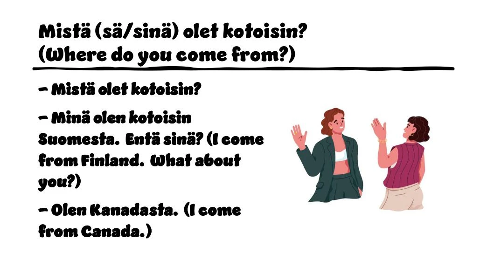
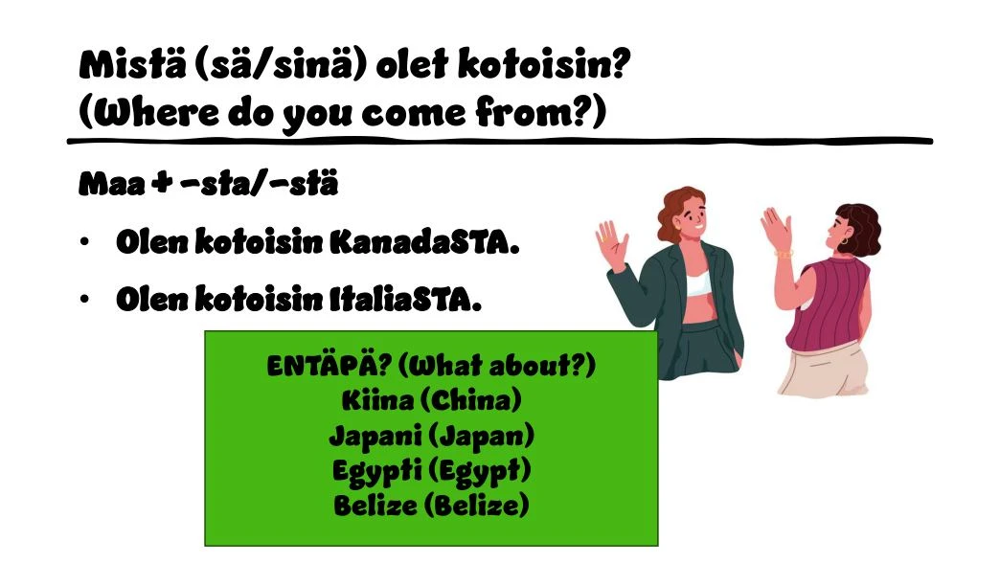

K200DJ96 芬兰语1 · 第 05 / 13 讲
Tunti 5 · 国家、国籍与语言
Countries, Nationalities and Languages
所属章节：第 2 章 数字、国家与动词
资料来源 · 4 项 / 已附 0 项
06_Tunti 5/2_Maat, kielet, kansallisuudet.pdf未附原文件06_Tunti 5/1_KOTITEHTÄVÄ 4 Sanasto, maat未附原文件06_Tunti 5/3_PUHU PARILLE.html未附原文件06_Tunti 5/5_KOTITEHTÄVÄHOMEWORK 5 Kirjoita kysymys未附原文件
未附文件仅列原始名称；版本与核对日期由维护者登记。
本节定位
第五讲是整门课“后缀最多”的一讲：同一个国家名后面可以接三种不同的后缀——-sta/-stä（来自）、-lainen/-läinen（……人）、以及语言名的 -a/-ä（说……语）。三者都由第二、三讲的元音和谐控制，所以本讲既是词汇课，也是“把元音和谐用到实战”的一讲。
这一讲还第一次出现例外清单：Suomi → Suomesta（不是 Suomista）、Venäjä → Venäjältä（用外格 -lta 而不是 -sta）、Yhdysvallat → amerikkalainen（国籍与国名完全不同源）。这些例外是考试的高频失分点，必须单独记。
学完本讲你能够：
- 回答“你从哪里来”“你是什么国籍”“你说什么语言”三组问题，且每组用对后缀
- 说出 19 个课内国家名的芬兰语形式，并给每个国家配上 -sta/-stä 形式
- 区分
Mitä kieltä（第一语言/某一种语言）与Mitä kieliä（多种语言） - 复述 8 组不规则形式（Suomi、Irlanti、Venäjä、Malta、Filippiinit、Yhdysvallat 等）
- 解释为什么国籍与语言名在芬兰语里不大写
5.1 三组后缀总览：一个问题对应一个后缀
| 问题 | 问的是 | 后缀 | 例句 |
|---|---|---|---|
| Mistä sinä olet kotoisin? | 来自哪个国家 | -sta / -stä | Olen kotoisin Suomesta. |
| Minkä maalainen sinä olet? | 国籍 | -lainen / -läinen | Olen suomalainen. |
| Mitä kieltä sinä puhut? | 说什么语言 | -a / -ä | Puhun suomea. |
| Mikä on sinun kotimaa? | 祖国（名词） | 基本形式，不变 | Minun kotimaa on Suomi. |
| Mikä on sinun äidinkieli? | 母语（名词） | 基本形式，不变 | Minun äidinkieli on suomi. |
注意后两行：kotimaa 与 äidinkieli 在答句里用基本形式（词典形），因为它们是 on 后面的表语，不表示“从哪来”也不表示“说哪种语言”。课件在 PUHU PARILLE 里特意标注 “basic form, dictionary form”，就是提醒这一点。
英文表述：Three different suffixes answer three different questions: -sta/-stä for origin, -lainen/-läinen for nationality, and -a/-ä for the language spoken. The nouns kotimaa and äidinkieli stay in the dictionary form after on.
Olen Suomesta（错在把“来自”当成“是”）→ 应为 Olen kotoisin Suomesta 或 Olen suomalainen。Olen suomesta ✗（国籍不能加 -sta）。Puhun suomi ✗（语言要加 -a）。5.2 -sta/-stä：来自某地
规则：国名 + -sta（后元音词）或 -stä（前元音词）。
| 国家 | 来自 | 元音依据 |
|---|---|---|
| Kanada | Kanadasta | a → -sta |
| Italia | Italiasta | a → -sta |
| Kiina | Kiinasta | a → -sta |
| Japani | Japanista | a → -sta |
| Egypti | Egyptistä | i 而已 → -stä |
| Belize | Belizestä | e 而已 → -stä |
| Ruotsi | Ruotsista | o、u → -sta |
| Viro | Virosta | o → -sta |
这组看起来“加个后缀就行”，但课件紧接着给了八条不规则形式。原因有两类：一是词干本身要变（Suomi → Suome-），二是某些地名在芬兰语的方位系统里被视为“外部地点”，要用外格 -lta/-ltä 而不是内格 -sta/-stä。
| 国家 | 正确形式 | 类型 |
|---|---|---|
| Suomi | Olen Suomesta. | 词干变：Suomi → Suome- |
| Irlanti | Olen Irlannista. | 词干变：Irlanti → Irlanni-（加 n） |
| Israel | Olen Israelista. | 规则 |
| Pakistan | Olen Pakistanista. | 规则 |
| Venäjä | Olen Venäjältä. | 外格：-lta |
| Malta | Olen Maltalta. | 外格：-lta |
| Filippiinit | Olen Filippiineiltä. | 复数 + 外格 |
| Yhdysvallat | Olen Yhdysvalloista. / USA:sta. | 复数词干 -i- |
为什么 Venäjä 用 -lta？芬兰语把一部分地名（尤其“地区/国土”性质的名字）当作“表面”而不是“内部”：Venäjältä（从俄罗斯来）、Maltalta（从马耳他来）。这类地名还有 Filippiineiltä（菲律宾，复数 + 外格）。
英文表述：A small group of place names — Venäjä, Malta, Filippiinit — take the outer cases -lta/-ltä instead of the usual -sta/-stä.
Suomesta、Irlannista、Israelista、Pakistanista、Venäjältä、Maltalta、Filippiineiltä、Yhdysvalloista。5.3 -lainen/-läinen：哪国人
规则：国名 + -lainen（后元音）或 -läinen（前元音）。这是形容词性后缀，可以作表语（Olen suomalainen），也可以修饰名词（suomalainen kahvi）。
| 国家 | 国籍 | 元音依据 |
|---|---|---|
| Kanada | kanadalainen | a → -lainen |
| Kiina | kiinalainen | a → -lainen |
| Japani | japanilainen | a → -lainen |
| Slovenia | slovenialainen | a → -lainen |
| Egypti | egyptiläinen | i → -läinen |
| Belize | belizeläinen | e → -läinen |
课件还给了城市级的用法：Lahti → lahtelainen、Helsinki → helsinkiläinen。也就是说 -lainen 不只用在国家，也可以加在城市后面表示“某地人”。
英文表述：The suffix -lainen/-läinen forms adjectives of origin and can be attached to countries and cities alike: lahtelainen, helsinkiläinen.
不规则清单：
| 国家 | 国籍 | 说明 |
|---|---|---|
| Suomi | suomalainen | 不用 Suomi- 词干 |
| Ruotsi | ruotsalainen | 规则，但注意 -ts- 保留 |
| Pakistan | pakistanilainen | 加 -i- 再接 -lainen |
| Venäjä | venäläinen | 原来的 -jä- 脱落 |
| Yhdysvallat | amerikkalainen（口语 jenkki） | 国名与国籍不同源 |
| Iso-Britannia | britti / brittiläinen | 也可细分 englantilainen、skotti、walesilainen |
Venäjä → venäläinen 的变化值得单独看：venäjä- 里的 -jä- 在加后缀时脱落，只留 venä- + -läinen。这是课件明确标注的“syllable -jä- disappears”。
suomalainen、kanadalainen、suomi、ranska。只有国家名大写（Suomi、Kanada）。写成 Suomalainen 是英语习惯的迁移，在芬兰语里算拼写错误。5.4 语言名：kieli + -a/-ä
问“你说什么语言”用 Mitä kieltä sinä puhut?；回答时语言名要加 partitive -a/-ä，因为 puhua 是“部分格动词”（说的是某种语言的一部分/一种）。
| 语言 | 说……语 | 元音依据 |
|---|---|---|
| ranska | ranskaa | a → -a |
| kiina | kiinaa | a → -a |
| venäjä | venäjää | ä → -ä |
| japani | japania | a → -a |
| ruotsi | ruotsia | o、u → -a |
| iiri | iiriä | i 而已 → -ä |
| espanja | espanjaa | a → -a |
| englanti | englantia | a → -a |
| suomi | suomea | 词干变：suomi → suome- |
两个不规则：suomi → suomea（词干变 e）、thai → thaita 或 thai-kieltä（可加 kieli 说清楚）。
Mitä kieltä（单数 partitive）通常指第一语言/某一种语言；Mitä kieliä（复数 partitive）指会说的多种语言。回答多种语言时每个语言名都要 partitive，并用 ja 连接：Puhun suomea, ruotsia ja kiinaa.
英文表述：Mitä kieltä asks for one language, Mitä kieliä for several; every language name stands in the partitive and the items are linked with ja.
Puhun … + 语言（partitive）。单数问就答一个，复数问就答一串：Puhun ranskaa, englantia ja vähän espanjaa.（我说法语、英语，还会一点西班牙语）——vähän 修饰“会的程度”，不影响格。5.5 提问体系：五组问句与两种语体
| 问句 | 中文 | 语体 |
|---|---|---|
| Mistä sinä olet kotoisin? | 你从哪里来？ | 书面/中性 |
| Mikä on sinun kotimaa? | 你的祖国是哪里？ | 略正式 |
| Minkä maalainen sinä olet? | 你是哪国人？ | 常用 |
| Mikä on sinun kansallisuus? | 你的国籍是什么？ | 略正式 |
| Mitä kieltä sinä puhut? | 你说什么语言？ | 常用 |
| Mitä kieliä sinä puhut? | 你会说哪些语言？ | 常用 |
| Mikä on sinun äidinkieli? | 你的母语是什么？ | 略正式 |
口语版把 sinä 换成 sä：Mistä sä olet kotoisin?、Minkä maalainen sä olet?、Mitä kieltä sä puhut?。课件每一页标题都并列了这两种写法。
kotoisin 是副词“来自（某地）”，必须和 -sta/-stä 连用：Olen kotoisin Kanadasta.。不能单独说 Olen Kanadasta 吗？可以，意思是“我是从加拿大来的”，但“我来自加拿大”完整说法是加 kotoisin。
5.6 十九个国家名与它们的三种形式
| 国家 | 来自（-sta/-stä） | 国籍（-lainen/-läinen） | 语言 |
|---|---|---|---|
| Suomi | Suomesta | suomalainen | suomea |
| Ruotsi | Ruotsista | ruotsalainen | ruotsia |
| Venäjä | Venäjältä | venäläinen | venäjää |
| Viro | Virosta | virolainen | viroa |
| Saksa | Saksasta | saksalainen | saksaa |
| Iso-Britannia | Iso-Britanniasta | brittiläinen | englantia |
| Irlanti | Irlannista | irlantilainen | iiriä |
| Brasilia | Brasiliasta | brasilialainen | portugalia |
| Yhdysvallat | Yhdysvalloista | amerikkalainen | englantia |
| Kiina | Kiinasta | kiinalainen | kiinaa |
| Japani | Japanista | japanilainen | japania |
| Etelä-Korea | Etelä-Koreasta | korealainen | koreaa |
| Thaimaa | Thaimaasta | thaimaalainen | thaita |
| Intia | Intiasta | intialainen | hindiä |
| Pakistan | Pakistanista | pakistanilainen | urdua |
| Saudi-Arabia | Saudi-Arabiasta | saudiarabialainen | arabiaa |
| Egypti | Egyptistä | egyptiläinen | arabiaa |
| Sudan | Sudanista | sudanilainen | arabiaa |
| Etelä-Afrikka | Etelä-Afrikasta | eteläafrikkalainen | englantia |
这张表可以直接当“三栏练习卡”用：遮住后两列，只看国家名，依次说出 -sta/-stä、-lainen/-läinen 与语言名。注意 Etelä-Afrikka → eteläafrikkalainen 里 k 的双写（afrikka + lainen → afrikkalainen）。
5.7 本讲错误清单
Suomesta写成Suomista（词干是 Suome-，不是 Suomi-）Venäjältä写成Venäjästä（该地名用外格 -lta）venäläinen写成venäjäläinen（-jä- 脱落）- 国籍或语言名大写（
Suomalainen✗） Puhun suomi漏 partitive（应为suomea）Mitä kieltä与Mitä kieliä混用（单数问一种，复数问多种）Olen Kanadasta当“我是加拿大人”用（国籍要用kanadalainen）
三个问题各要一个后缀：Mistä sinä olet kotoisin? 用 -sta/-stä（Suomesta），Minkä maalainen sinä olet? 用 -lainen/-läinen（suomalainen），Mitä kieltä sinä puhut? 用语言名部分格 -a/-ä（suomea）。而 kotimaa、äidinkieli 在 on 后保持原形。三组不规则必考：Suomi→Suomesta（词干变 e）、Venäjä→Venäjältä、Malta→Maltalta、Filippiinit→Filippiineiltä 用外格 -lta，Yhdysvallat→Yhdysvalloista 但国籍是 amerikkalainen，Venäjä→venäläinen 的 -jä- 脱落。国籍与语言名一律小写，Suomalainen 是英语习惯迁移。Mitä kieltä 问一种、Mitä kieliä 问多种，答 Puhun suomea, ruotsia ja kiinaa.；vähän 只表程度不改格。
原版图页（源 PDF 插图页）





| Suomi / Finnish | 中文 | English 说明 / 例句 |
|---|---|---|
| maa | 国家 | Plural maat; also “country, land”. |
| kotimaa | 祖国 | Stays in the dictionary form after on. |
| kansallisuus | 国籍 | Formal question: Mikä on sinun kansallisuus? |
| kieli | 语言 | Partitive kieltä after puhua. |
| äidinkieli | 母语 | First language; dictionary form after on. |
| Mistä olet kotoisin? | 你从哪里来？ | Answer with -sta/-stä. |
| Minkä maalainen olet? | 你是哪国人？ | Answer with -lainen/-läinen. |
| Mitä kieltä puhut? | 你说什么语言？ | One language; answer in the partitive. |
| Mitä kieliä puhut? | 你会说哪些语言？ | Several languages; each in the partitive. |
| kotoisin | 来自 | Adverb requiring -sta/-stä. |
| Suomesta | 从芬兰 | Irregular stem: Suomi → Suome-. |
| Venäjältä | 从俄罗斯 | Uses the outer case -lta. |
| Maltalta | 从马耳他 | Also an outer-case place name. |
| Filippiineiltä | 从菲律宾 | Plural stem + -lta. |
| Yhdysvalloista | 从美国 | Plural stem Yhdysvallo-i-. |
| suomalainen | 芬兰人（的） | Nationalities are written in lower case. |
| venäläinen | 俄罗斯人（的） | The syllable -jä- drops. |
| amerikkalainen | 美国人（的） | Nationality differs from the country name. |
| lahtelainen | 拉赫蒂人 | The suffix also attaches to city names. |
| Puhun suomea | 我说芬兰语 | Language name in the partitive. |
问：Mistä sinä olet kotoisin? Minkä maalainen sinä olet? Mitä kieltä sinä puhut?
答：Olen kotoisin Kiinasta. Olen kiinalainen. Puhun kiinaa ja englantia.
分析：Kiinasta（-sta，因为 Kiina 有 a）；kiinalainen（-lainen，同样因 a）；kiinaa / englantia（partitive）。三个后缀都遵循元音和谐，没有一个需要背特殊形式。
问：Mistä sinä olet kotoisin?
答：Olen kotoisin Venäjältä.
分析：大多数国名用内格 -sta/-stä（“从……内部”），但 Venäjä 被当作“外部地点”，用外格 -lta/-ltä（“从……表面”）。同样处理的有 Malta → Maltalta、Filippiinit → Filippiineiltä。
对照：国籍与语言不受这条影响：venäläinen、venäjää 都按普通规则。
单数：Mitä kieltä sinä puhut? → Puhun suomea.（一种语言，partitive 单数）
复数：Mitä kieliä sinä puhut? → Puhun suomea, ruotsia ja kiinaa.（多种语言，每个都是 partitive）
要点：kieltä（单数 partitive）与 kieliä（复数 partitive）只差一个字母，但决定了答句要给一个还是一串语言。
Olen kanadalainen. 不能写成 Olen Kanadalainen.——芬兰语里国籍是形容词，一律小写；只有国名 Kanada 大写。
Yhdysvallat（美国，字面“合众国”，复数）的国籍不是 yhdysvaltalainen 的常用形式，而是 amerikkalainen（口语 jenkki）。国名与国籍不同源，必须单独记。
同理：Iso-Britannia 的国籍可以是 brittiläinen / britti，若要说“英格兰人”则用 englantilainen。
- 写出三个答句：
Mistä sinä olet kotoisin?（中国）、Minkä maalainen sinä olet?（中国人）、Mitä kieltä sinä puhut?（中文）。 - 把下列国名变成“来自”形式：
Suomi、Venäjä、Irlanti、Malta、Yhdysvallat。 - 把下列国名变成国籍：
Egypti、Japani、Venäjä、Yhdysvallat。 - 改错：
Olen Suomesta. Puhun suomi.（两处） - 用
Mitä kieliä造句：你会说的三种语言（用 partitive 并加vähän修饰其中一种）。
答案与思路
1. Olen kotoisin Kiinasta. Olen kiinalainen. Puhun kiinaa.（三个后缀分别为 -sta、-lainen、-a，均按元音和谐取后元音形式。）
2. Suomesta（词干 Suome-）、Venäjältä（外格）、Irlannista（加 n）、Maltalta（外格）、Yhdysvalloista（复数词干）。
3. egyptiläinen（-läinen）、japanilainen（-lainen）、venäläinen（-jä- 脱落）、amerikkalainen（不同源）。
4. Olen Suomesta 语义不完整 → Olen kotoisin Suomesta 或 Olen suomalainen；Puhun suomi → Puhun suomea（partitive）。
5. 例：Puhun kiinaa, englantia ja vähän suomea.（vähän 放在最后一个语言前，三个语言名都是 partitive。）
Suomista、Irlantista、venäjäläinen。三个词都要先改词干再加后缀。Puhun suomi、Puhun ruotsi。语言名必须 -a/-ä。回答“你从哪里来”的三步
- 听清问的是 origin、nationality 还是 language
- 选对应后缀：-sta/-stä / -lainen/-läinen / -a/-ä
- 检查元音和谐：词内有 a/o/u 用后元音形式，否则前元音形式
国籍与国名检查清单
- 国名是否大写、国籍与语言是否小写
- Suomi / Irlanti / Venäjä 的词干是否已调整（Suome- / Irlanni- / venä-）
- Venäjä、Malta、Filippiinit 是否用了外格 -lta/-ltä
- Yhdysvallat 是否写成 amerikkalainen 而不是按国名直译
- 语言名前是否加了 partitive -a/-ä
| 源文件 | 页码 | 覆盖知识点 |
|---|---|---|
| 06_Tunti 5/2_Maat, kielet, kansallisuudet.pdf | p2–p3 | Mistä olet kotoisin 与 Mikä on sinun kotimaa（含“basic form”提示） |
| 06_Tunti 5/2_Maat, kielet, kansallisuudet.pdf | p4–p5 | -sta/-stä 规则与 Kiina / Japani / Egypti / Belize 四例，元音和谐三行口诀 |
| 06_Tunti 5/2_Maat, kielet, kansallisuudet.pdf | p6 | 八条不规则：Suomi、Irlanti、Israel、Pakistan、Venäjä、Malta、Filippiinit、Yhdysvallat |
| 06_Tunti 5/2_Maat, kielet, kansallisuudet.pdf | p7–p10 | -lainen/-läinen 规则、城市级用法（lahtelainen、helsinkiläinen）、大小写规则 |
| 06_Tunti 5/2_Maat, kielet, kansallisuudet.pdf | p11 | 国籍不规则：suomalainen、ruotsalainen、pakistanilainen、venäläinen、amerikkalainen、britti |
| 06_Tunti 5/2_Maat, kielet, kansallisuudet.pdf | p12–p16 | Mitä kieltä / kieliä 的区别、语言名 -a/-ä、单数与复数问法 |
| 06_Tunti 5/2_Maat, kielet, kansallisuudet.pdf | p17 | 语言不规则：suomi → suomea、thai → thaita / thai-kieltä |
| 06_Tunti 5/1_KOTITEHTÄVÄ 4（Sanasto, maat.docx） | 全篇 | 19 个国家名的词汇表 |
| 06_Tunti 5/3_PUHU PARILLE.html | 全篇 | 七个问句的口语对练脚本（含 kotimaa、äidinkieli 用基本形式） |
| 06_Tunti 5/5_KOTITEHTÄVÄ 5 Kirjoita kysymys | 全篇 | 用 kuka / mikä / missä / milloin / mitä / millainen 造句，本讲先掌握 mikä 与 mistä 两类 |
| （跳过） | — | PUHU PARILLE 的第二个文件（Esittele sinun pari ryhmälle）为课堂口语活动说明，无新语言点 |
| （拓展） | — | 5.6 的“语言”一列在课件里只给了部分语言（ranska、kiina、venäjä、japani、ruotsi、iiri），其余按同一规则补全；5.2 关于“外格表示地区性国土”的解释是对课件例外清单的归纳，课件只列形式 |